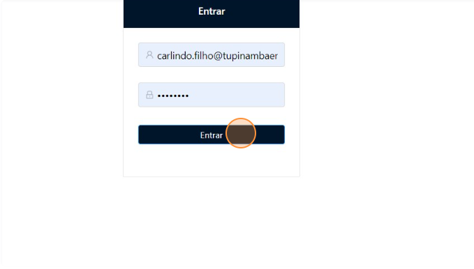
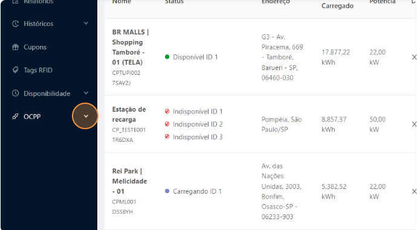
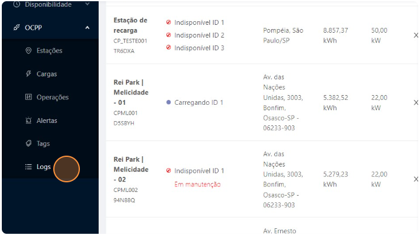
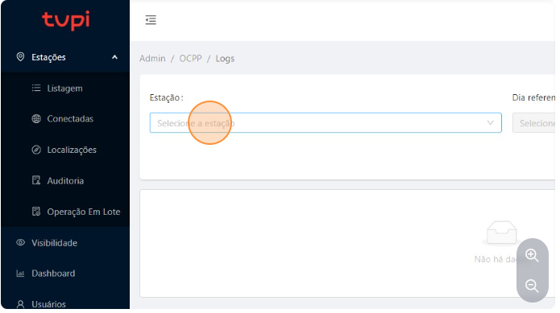
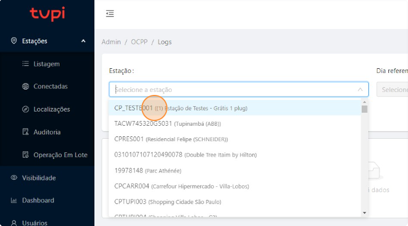
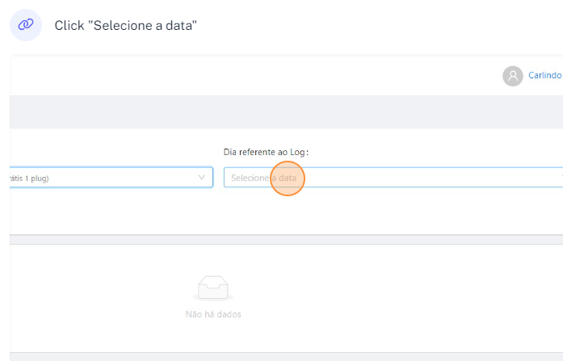
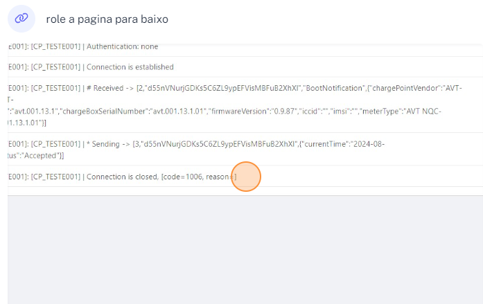

Menu do Tutorial
Acessando os Logs de uma Estação
Passo 2: clicar em entrar
Efetuar login.
Passo 3: Clicar OCPP
Procurar no lado esquerdo a opção OCPP.
Passo 4: Clicar em Logs
Procurar no lado esquerdo a opção Logs.
Passo 5: Clicar "Selecione a estação"
Clicar .
Passo 6: Clicar "na estação desejada"
Selecionar a estação que deseja.
Passo 7: Clicar "na estação desejada"
Selecione a data.
Passo 7: Analise os Logs"
analise.
Conclusão
Parabéns! Você acessou e os Logs da estação desejada.